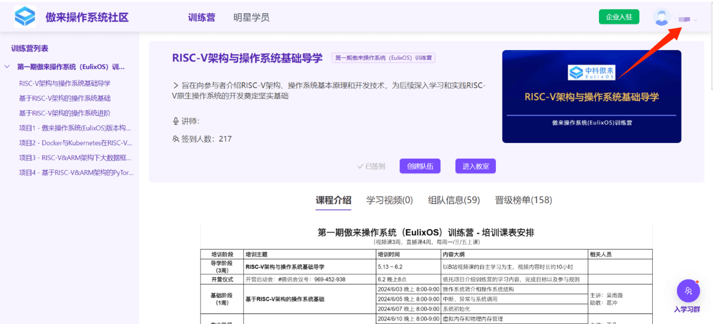
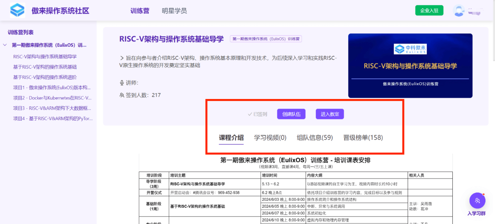
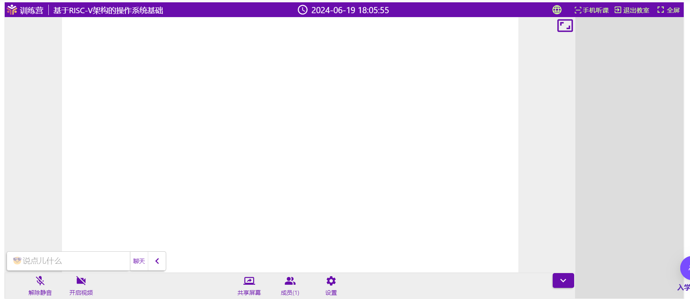
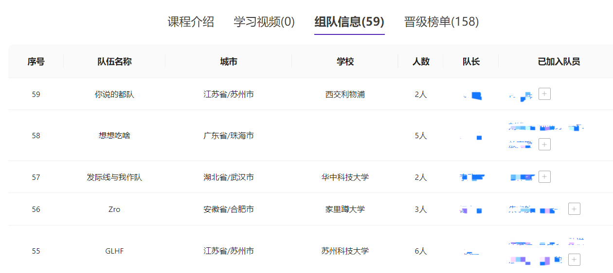

前言
介绍
本文档主要提供第一期傲来操作系统训练营导学阶段的学习引导
环境配置
为了顺利进行导学阶段的实验，为之后正式学习的实验做好准备，需要先进行一些简单的环境配置。
我们推荐在 Linux 环境下完成实验，如果不在 Linux 环境下完成实验可能会遇到部分问题，具体可参考如何在非 Linux 环境中完成实验。
配置 Git
实验的最终成绩需要提交到远程 Gitee 仓库进行评测，你需要确保本地拥有 Git。
Ubuntu/Debian 发行版安装 Git：
sudo apt install git
Arch 发行版安装 Git：
sudo pacman -Syu git
Windows 下需要安装 Git for Windows，可从如下链接安装：
https://gitforwindows.org/
在完成 Git 的安装后需要对 Git 进行基本的配置：
git config --global user.name "你的 gitee 账户名/自定义"
git config --global user.email "你的 gitee 账户默认的邮箱地址/常用邮箱地址"
配置 C 工具链
导学阶段实验由5到基础的 C 语言语法题组成，为了完成实验以及在本地进行调试，需要配置 C 工具链。
Ubuntu/Debain 发行版配置：
sudo apt install build-essential gdb #安装 GNU 工具链与调试工具
Arch 发行版配置：
sudo pacman -S base-devel gdb
Windows 需要安装 mingw 等编译工具链。
mingw 官网：https://www.mingw-w64.org/
在完成安装之后，可使用如下指令检测 gcc 是否被正确配置：
gcc --version
至此，导学阶段实验所需要的基本环境配置已完成，接下来，让我们正式进入导学阶段的学习。
导学阶段基本信息
本章节介绍导学阶段的基本信息，主要内容如下：
训练营教学系统使用引导
训练营教学系统导学阶段链接
个人信息管理

如图所示，通过右上角显示的昵称，选择个人中心，进入个人信息管理。
通过这里的编辑个人信息可以对自己的信息进行补充和修改。
注：为了确保实验成绩在排行榜上正确显示，请确保正确填写了 GitHubName/GiteeName。
如何听课

1.首先，你需要进行课程签到，如未完成签到，签到按钮会显示于红圈内“已签到”位置。
2.完成签到后可在上课时间点击“进入教室”听课，课程回放会在直播课程结束后于“学习视频”页面上架。
教室使用

进入教室时需要确保给与当前页面足够的权限。
如有需要可通过左下角聊天框向老师提问。
如发现电脑端听课不便，可通过右上角“手机听课”在手机端听课。
注：请优先使用 Chrome 浏览器听课。
成绩查看

实验的最终成绩会显示在晋级榜单页面，此处会显示排名、姓名（授课系统昵称）、学校（如在个人信息内填写）、分数与其他信息。
排行榜上显示的成绩将会作为个人晋级的依据。
组队

训练营允许且鼓励学员组队学习，组队的操作位于“组队信息页面”。关于组队的操作说明如下：
- 只有队长可以创建/解散队伍，其余队员只可加入退出。
- 包含队长在内，不少于两人的队伍为有效组队，不允许“单人成队”。
- 训练营为全员晋级的队伍的队长发放奖品作为鼓励。
- 组队情况不影响单人晋级。
导学阶段视频链接与学习引导
在导学阶段，我们使用《循序渐进，学习开发一个 RISC-V 上的操作系统》系列课程作为导学的网络课程，帮助您学习和掌握与RISC-V相关的指令、操作系统知识。
该系列课程的视频回放上传至 bilibili 上，通过访问《循序渐进，学习开发一个 RISC-V 上的操作系统 》课程录像 进行观看学习。
全部课程的课件位于码云上的《循序渐进，学习开发一个 RISC-V 上的操作系统 》课件，可以通过浏览器访问或对该仓库进行克隆。
| 编号 | 课程 | 时长 | 链接 |
|---|---|---|---|
| 1 | 导论 | 25分钟 | 链接 |
| 2 | 计算机系统漫游 | 53分钟 | 链接 |
| 3 | RISC-V ISA 介绍（上） | 36分钟 | 链接 |
| 4 | RISC-V ISA 介绍（下） | 1小时6分钟 | 链接 |
| 5 | 编译与链接 | 44分钟 | 链接 |
| 6 | 嵌入式开发介绍 | 34分钟 | 链接 |
| 7 | RISC-V 汇编编程（第一部分） | 28分钟 | 链接 |
| 8 | RISC-V 汇编编程（第二部分） | 43分钟 | 链接 |
| 9 | RISC-V 汇编编程（第三部分） | 43分钟 | 链接 |
| 10 | RISC-V 汇编编程（第四部分） | 41分钟 | 链接 |
| 11 | RISC-V 汇编编程（第五部分） | 25分钟 | 链接 |
| 12 | RISC-V 汇编编程（第六部分） | 44分钟 | 链接 |
| 13 | RISC-V 汇编编程（第七部分） | 57分钟 | 链接 |
| 14 | RISC-V 汇编编程（第八部分） | 17分钟 | 链接 |
| 15 | RVOS 介绍 | 15分钟 | 链接 |
| 16 | Hello RVOS（上） | 38分钟 | 链接 |
| 17 | Hello RVOS（下） | 57分钟 | 链接 |
| 18 | 内存管理 | 55分钟 | 链接 |
| 19 | 上下文切换与协作式多任务 | 38分钟 | 链接 |
| 20 | Trap 与 Exception | 1小时7分钟 | 链接 |
| 21 | 外部设备中断 | 42分钟 | 链接 |
| 22 | 硬件定时器 | 15分钟 | 链接 |
| 23 | 抢占式多任务 | 37分钟 | 链接 |
| 24 | 任务同步和锁 | 1小时2分钟 | 链接 |
| 25 | 软件定时器 | 32分钟 | 链接 |
| 26 | 系统调用 | 45分钟 | 链接 |